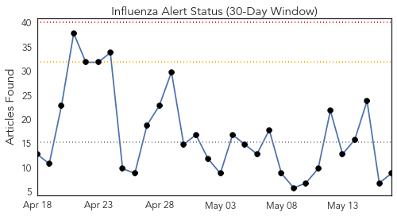
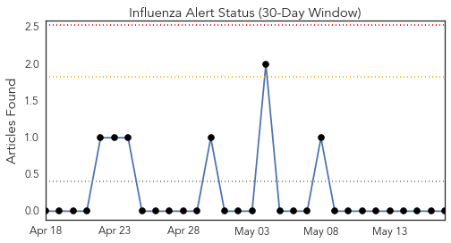
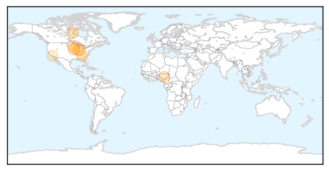
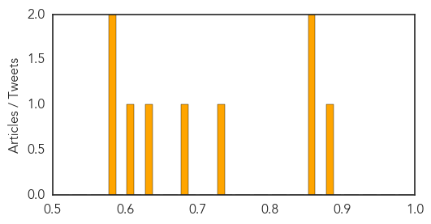

Toggle navigation
Early Warning
Daily Alerts
Influenza
May 17, 2015
Compare to:
-
Dengue Fever
Hemmorhagic Fever
Mold/Fungal Infection
Meningitis
Pertussis / Whooping Cough
Middle East Respiratory Syndrome
Cholera
Hepatitis
Chikungunya
Yellow Fever
Bubonic Plague
West Nile Virus
Swine Flu
Ebola
Measles
Unknown
Mumps
30 Day Trends
Web: 0
alerts
, 0
warnings
Twitter: 2
alerts
, 0
warnings
Top Articles:
0.898
Over 100 influenza-related deaths in Alberta during 2014-15 season
0.871
Tests confirm canine flu confirmed in Georgia linked to Chicago
0.855
Terre Haute Tribune Star: Local News
0.746
FAO Raises The Alarm Over Depletion Of Poultry, Food Insecurity
0.688
Avian flu casts long shadow over Swift, Kandiyohi counties
0.647
New Grassley, Ernst Urge USDA to Properly Deploy Resources to Fight Avian Flu
0.607
Bird flu hits egg-producing Iowa hard; loss expected to be 25 million hens
0.589
Bird flu hits hard in egg-producing Iowa; 25 million hens may be lost
0.577
CDC Predicts How You Will Die Based On Where You Live
Top Tweets:
No tweets found for May 17, 2015
Web/News Articles

Tweets

Article Locations

Article Confidences
